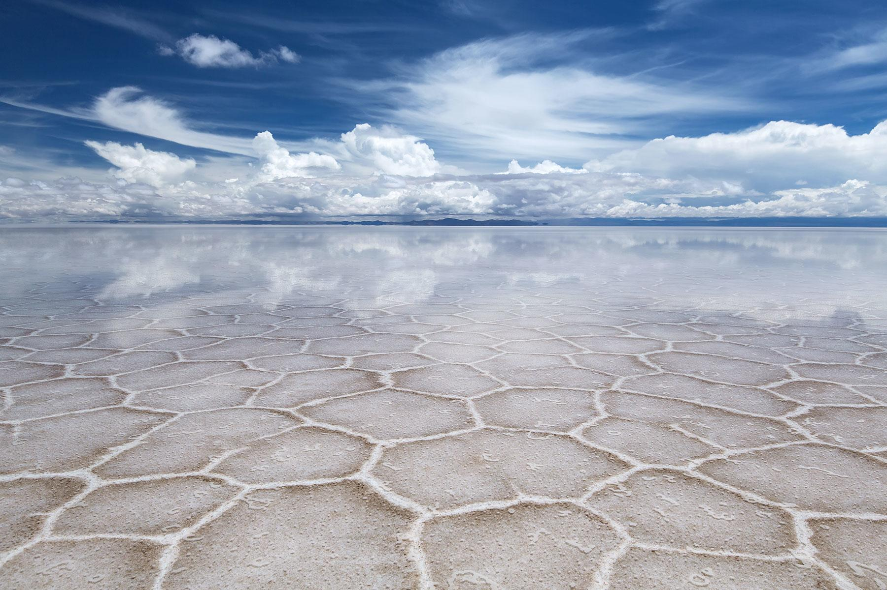

Salar de Uyuni


Location: Bolivia
Type: Lake
Area: 10,582 square kilometres (1,058,200 ha)
Fun Facts: In the low-rain period from April to November, due to the absence of industry and its high elevation, the skies above Salar de Uyuni are very clear, and the air is dry.
Salar de Uyuni, Bolivia